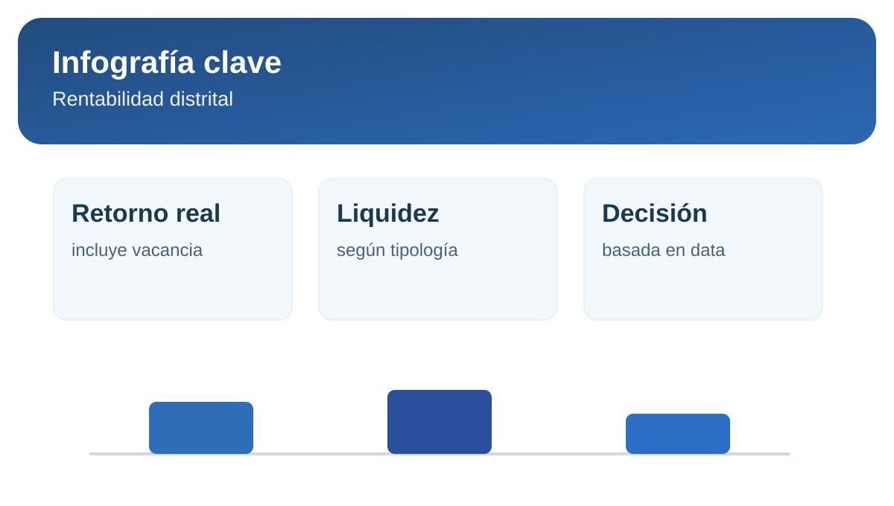

Rentabilidad de alquiler en Lima: distritos con mejor retorno
Cuando hablamos de rentabilidad de alquiler, no basta mirar cuánto pagará el inquilino cada mes. El retorno real depende de vacancia, gastos operativos, mantenimiento y riesgo de mora.
Rentabilidad bruta vs. rentabilidad efectiva
La rentabilidad bruta ayuda a comparar zonas, pero la efectiva es la que manda en caja. Un distrito con ticket alto puede tener más rotación y costos, mientras que uno de ticket medio puede generar flujo más estable en el tiempo.
Qué evaluar al comparar distritos
- Relación entre valor de compra y renta anual.
- Tiempo promedio de colocación del inmueble.
- Nivel de demanda por tipología (1, 2 o 3 dormitorios).
- Riesgo operativo y perfil de inquilino dominante.
Infografía rápida: retorno inmobiliario

Retorno realrenta neta menos vacancia y costos
Liquidezvelocidad de alquiler por microzona
Decisiónequilibrio entre ticket y estabilidad
Fuentes consultadas
Convierte teoría en decisión: estima renta de salida y proyecta retorno.
Simular precio de alquiler